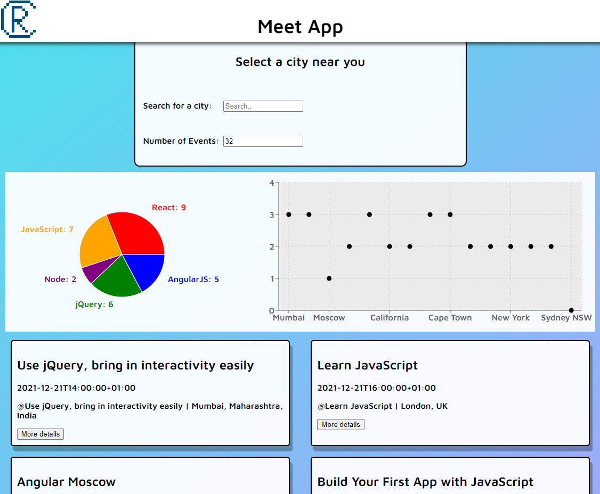
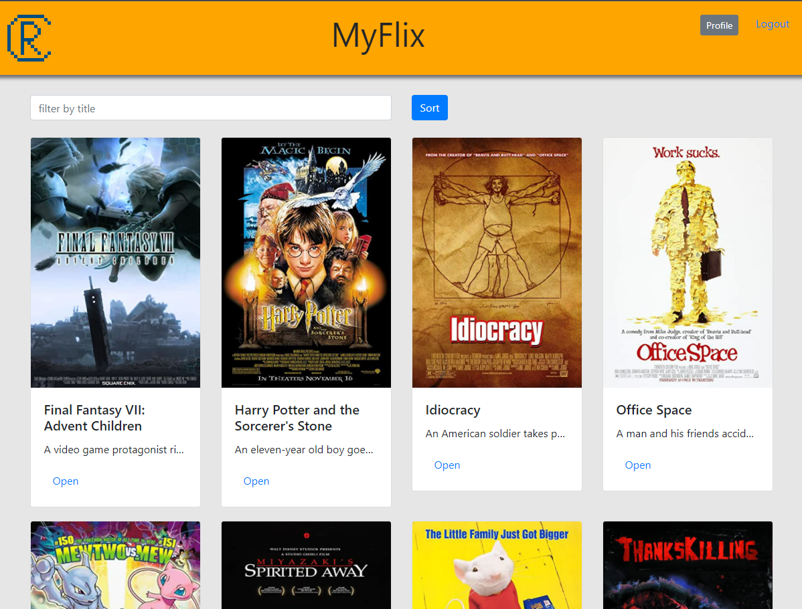
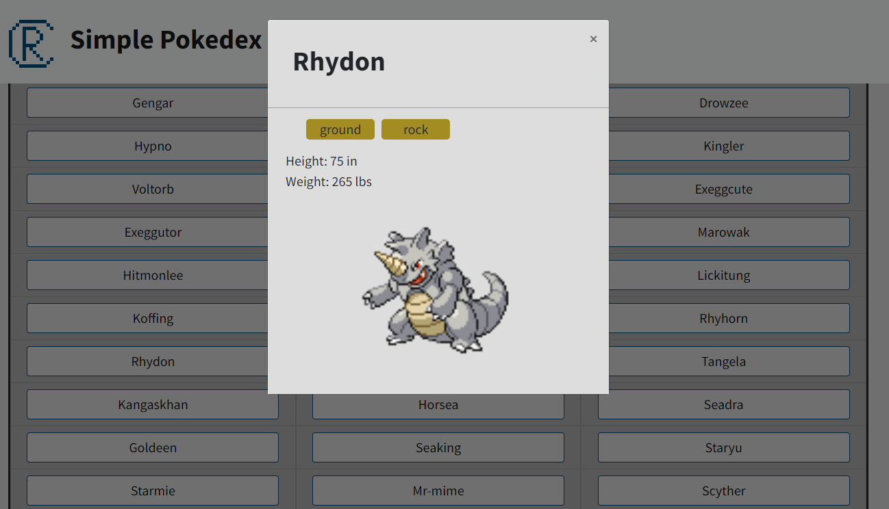
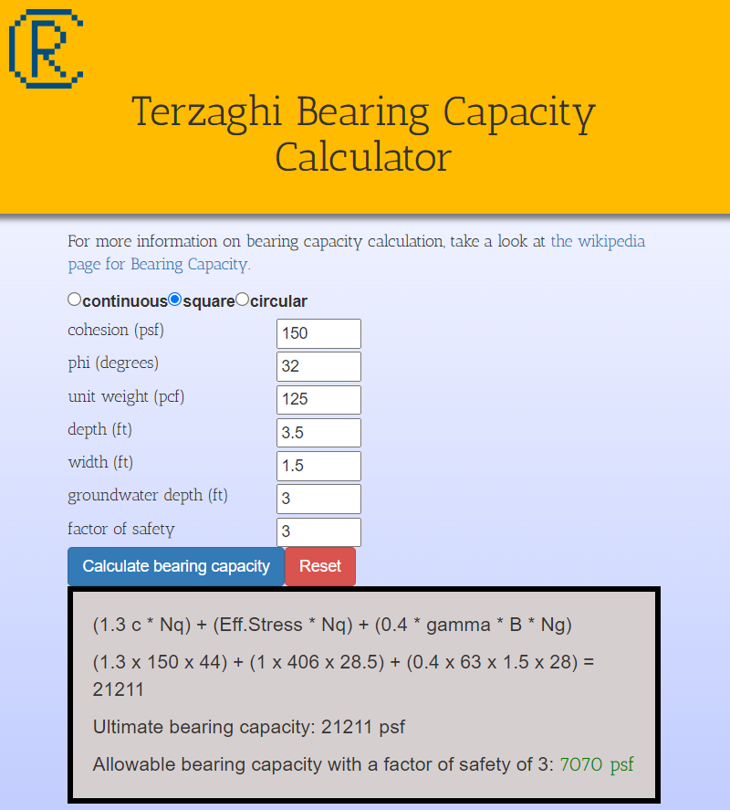

Tech Meet App

The challenge
To create a progressive web application (PWA) with React using a test-driven development (TDD) technique that accesses the Google Calendar API to fetch upcoming events. This application was built over two weeks as a part of CareerFoundry’s web development immersion course.
The process
My process was to write unit test and integration tests that were directly informed by the user stories, then write the necessary code to make the tests pass. Then I wrote acceptance tests to ensure that the required features work properly in my application. The resulting codebase is scalable and easier to debug due to the test-driven development process.
The goal
A responsive web app that provides users with information about upcoming tech events around the world. Additionally, data visualizations inform the user about which cities have the most events and what types of events are the most popular.
Learn moreMyFlix

The challenge
To create a full-stack web application using the MERN stack (Mongo, Express, React, Node) that allows users to create, read, update, and delete user data, and view information about different movies, genres, and directors. This application was built over one month as a part of CareerFoundry’s web development immersion course.
The process
I built a back-end server using Mongo and Express with a RESTful API allowing users to create, update, read, and delete data. Then, I designed a client-side application using React with Redux that uses the API to view information about movies and update the user’s personal information.
The goal
A full-stack, responsive, and scalable web application demonstrating my both my back-end and front-end design capabilities that lets users view information about movies stored in the database and update their personal information.
Learn moreSimple Pokédex

The challenge
To build a small web application that loads data about Pokémon from an external API called the pokéAPI, enables the user to view details about a selected Pokémon, and works on all modern browsers. This application was built in one week as a part of CareerFoundry’s web development immersion course.
The process
The process used was to set up the page format in HTML, make an ajax fetch request to the pokéAPI to load some basic Pokémon data, then add a list of the fetched Pokémon names to the DOM using JavaScript. Then, I created an additional fetch request that triggers when the user clicks on a Pokémon name to get and display additional details in a pop-up modal.
The goal
A web app that provides users with Pokédex data about 151 Pokémon. The app displays nicely on all screen sizes, and on desktop, users can use the left and right arrow keys to scroll through the Pokémon list.
Learn moreTerzaghi Bearing Capacity Calculator

The challenge
To create a web-based calculator to easily compute the Terzaghi bearing capacity of any soil type for the design of shallow foundations. This is a common calculation used in geotechnical engineering and is straightforward to calculate once the design parameters are known, but prone to calculator errors due to the large number of variables and items to lookup. This app was designed to reduce calculation errors easily introduced by performing the work by hand.
The process
The process used to build the calculator was to create a JavaScript class called TerzaghiBearingCapacity with all the relevant design parameters and that has a function to calculate the bearing capacity using all of the design parameters. The user interface, built with React, works with a TerzaghiBearingCapacity class instance to calculate the bearing capacity for the soil type inputted by the user.
The goal
A web calculator that quickly and accurately calculates the Terzaghi bearing capacity and allows for fast, low-effort sensitivity analysis.
Learn more